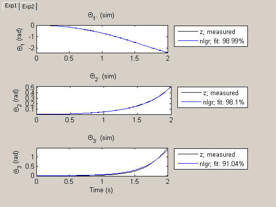
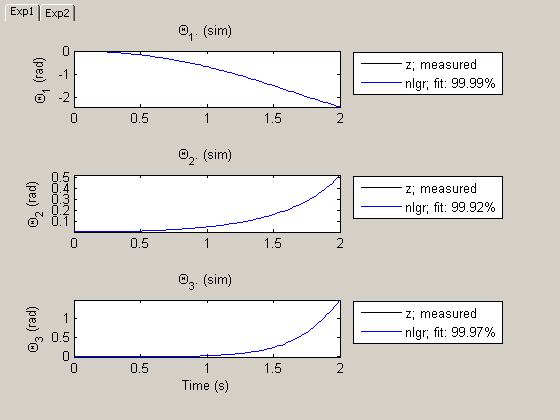

An Industrial Three-Degrees-of-Freedom Robot: C MEX-File Modeling of MIMO System Using Vector/Matrix Parameters
This tutorial describes how to design C-MEX model files that involve scalar, vector as well as matrix parameters. As a modeling basis, we will use a somewhat idealized industrial robot, where the left-hand sides of the derived state space equations are not explicitly given. To make it a little bit more illustrating, we will also employ multiple experiment data in the identification part.
Contents
Modeling of the Manutec R3 Robot
The considered robot, the Manutec r3, was originally manufactured by Manutec, a Siemens subsidiary company. In reality, the robot comprises six different links, three for positioning a tool center and three for orienting the tool itself. Here we will just consider the modeling of a robot with the three degrees of freedom related to the movement of the tool center. The components of the robot will be modeled as rigid bodies connected by rotational joints with one degree of freedom. Friction and other complex phenomena in the gear-boxes as well as the dynamics of the motors and the sensors are neglected. Even with these simplifications, the resulting model structure is, as we shall see, rather intricate.
The model structure used for the identification experiments conducted below was described in detail in the document:
M. Otter and S. Turk. The DFVLR Models 1 and 2 of the Manutec r3 Robot. Institute for Robotics and System Dynamics, German Aerospace Research Establishment (DLR), Oberpfaffenhofen, May 1988.
and parameter estimation based on the simplified Manutec r3 robot has earlier been considered in the book:
K. Schittkowski. Numerical Data Fitting in Dynamical Systems. Kluwer Academic Publishers, pages 239-242, 2002.
Figure 1 shows a schematic picture of the Manutec r3 robot.

Figure 1: Schematic view of a Manutec r3 robot.
The dynamics of the simplified Manutec r3 robot is given by the vector equation
d^2 d
M(q(t)) ---- q(t) = F(u(t)) + G(q(t)) + H(-- q(t), q(t))
dt^2 dt
T
where the column vector q(t) = [q_1(t) q_2(t) q_3(t)] describes the
relative angle between arm i-1 and arm i for i = 1, 2, 3, with arm 0
corresponding to the coordinate of the fundament. The torque controls
u(t) = [u_1(t) u_2(t) u_3(t)]^T applied to the three motors represent the
exogenous force moving the robot. These signals are individually scaled
(via the force coefficients Fc(1), Fc(2) and Fc(3))) to provide the
driving force:
T
F(u(t)) = [Fc(1)*u_1(t) Fc(2)*u_2(t) Fc(3)*u_3(t)]The mass matrix M(q(t)) is a rather complex symmetric and positive definite 3-by-3 matrix with elements as follows.
M(1, 1) = c_1(p) + c_2(p)*cos(q_2(t))^2 + c_3(p)*sin(q_2(t))^2 +
c_4(p)*cos(q_2(t)+q_3(t)) + c_5(p)*sin(q_2(t)+q_3(t)) +
c_6(p)*sin(q_2(t))*sin(q_2(t)+q_3(t))
M(1, 2) = c_7(p)*cos(q_2(t)) + c_8(p)*cos(q_2(t)+q_3(t))
M(1, 3) = c_9(p)*cos(q_2(t)+q_3(t))
M(2, 1) = M(1, 2)
M(2, 2) = c_10(p) + c_11(p)*cos(q_3(t))
M(2, 3) = c_12(p) + c_13(p)*cos(q_3(t))
M(3, 1) = M(1, 3)
M(3, 2) = M(2, 3)
M(3, 3) = c_14(p)where c_1(p), ..., c_14(p) are 14 functions of the robot parameters p.
The robot is also affected by two additional forces. The first one, G(q(t)), is caused by gravity and has elements
G_1(p) = 0
G(p) = G_2(p) = b_1(p)*sin(q_2(t)) + b_2(p)*sin(q_2(t)+q_3(t))
G_3(p) = b_3(p)*sin(q_2(t)+q_3(t))where b_1(p), ..., b_3(p) are three functions of the parameters p. The second force, h(d/dt q(t), q(t)), is caused by coriolis and centrifugal forces, which are computed via the so-called Christoffel symbols
d d d
g_ijk = -0.5*(-------- M(i, j) + -------- M(i, k) - -------- M(j, k))
d q_k(t) d q_j(t) d q_k(t)as
d 3 3 d d
H_i(-- q(t), q(t)) = sum(sum(g_ijk*-- q_k(t))*-- q_j(t))
dt j=1 k=1 dt dtfor i = 1, 2, 3.
The mass matrix M(q(t)) is invertible (for physically interesting angles), which means that the dynamics of the robot can be written
d^2 -1 d ---- q(t) = M(q(t)) (F(u(t)) + G(q(t)) + H(-- q(t), q(t))) dt^2 dt
By introducing the states
x_1(t) = q_1(t) relative angle between fundament and arm 1. x_2(t) = q_2(t) relative angle between arm 1 and arm 2. x_3(t) = q_3(t) relative angle between arm 2 and arm 3. x_4(t) = d/dt q_1(t) relative velocity between fundament and arm 1. x_5(t) = d/dt q_2(t) relative velocity between arm 1 and arm 2. x_6(t) = d/dt q_3(t) relative velocity between arm 2 and arm 3.
we end up with a state space model structure suitable for IDNLGREY modeling. In summary, this model involves 3 inputs, 6 states, 3 outputs, and 28 different model parameters or constants.
IDNLGREY Manutec R3 Robot Model Object
The C-MEX model file developed for this application is quite intricate. We will leave out many of its details and only provide an outline of it; the interested reader is referred to robot_c.c for the complete picture. The above equations result in a robot model with 28 (= Np) different parameters or constants, that for logical reasons are put into 10 (= Npo) unique parameter objects: 3 scalar ones, 5 vectors, and 2 matrices. The state update function, compute_dx, has the following reduced input argument list:
void compute_dx(double *dx, double *x, double *u, double **p)
where p holds the 10 parameter objects:
A. g = p[0], pl = p[5] and Ia1 = p[8] are scalars.
B. Fc = p[1], r = p[2], Im = p[3], m = p[4] and L = p[6] are column
vectors with two or three entries.
C. com = p[7] is a 2-by-2 matrix and Ia = p[9] a 4-by-2 matrix.The scalars are as usual referenced as p[0] (p(1) in a MATLAB file) and the i:th vector element as p[i-1] (p(i) in a MATLAB file). The matrices passed to a C-MEX model file are different in the sense that the columns are stacked upon each other in the obvious order. Hence com(1, 1) is referred as com[0], com(2, 1) as com[1], com(1, 2) as com[3], and com(2, 2) as com[3]. Similarly, the eight elements of Ia are obtained via Ia[i] for i = 0, 1, ..., 7.
With this, compute_dx involves the following computational steps (note that many assignments are left out here). The purpose of steps A-E is to restructure the equations so that the states can be explicitly computed.
void compute_dx(double *dx, double *x, double *u, double **p)
{
/* Declaration of model parameters and intermediate variables. */
double *g, *Fc, *r, *Im, *m, *pl, *L, *com, *Ia1, *Ia;
double M[3][3]; /* Mass matrix. */
... /* Retrieve model parameters. */
... /* A. Components of the symmetric and positive definite mass matrix M(x, p), a 3x3 matrix. */
M[0][0] = Ia1[0] + r[0]*r[0]*Im[0] + com[2]*com[2]*m[1] ...
...
M[2][2] = Ia[4] + r[2]*r[2]*Im[2] + com[3]*com[3]*m[1] + L[1]*L[1]*pl[0]; /* B. Inputs. */
F[0] = Fc[0]*u[0]; ... /* C. Gravitational forces G. */
G[0] = 0; ... /* D. Coriolis and centrifugal force components Gamma and forces H. */
Gamma[1] = (Ia[6] - Ia[5] - com[3]*com[3]*m[1] ... /* E. Compute inverse of M. */
Det = M[0][0]*M[1][1]*M[2][2] + 2*M[0][1]*M[1][2]*M[0][2] ... /* State equations. */
/* x[0]: Relative angle between fundament and arm 1. */
/* x[1]: Relative angle between arm 1 and arm 2. */
/* x[2]: Relative angle between arm 2 and arm 3. */
/* x[3]: Relative velocity between fundament and arm 1. */
/* x[4]: Relative velocity between arm 1 and arm 2. */
/* x[5]: Relative velocity between arm 2 and arm 3. */
dx[0] = x[3];
dx[1] = x[4];
dx[2] = x[5];
dx[3] = Minv[0][0]*(F[0]+G[0]+H[0]) + Minv[0][1]*(F[1]+G[1]+H[1]) + Minv[0][2]*(F[2]+G[2]+H[2]);
dx[4] = Minv[0][1]*(F[0]+G[0]+H[0]) + Minv[1][1]*(F[1]+G[1]+H[1]) + Minv[1][2]*(F[2]+G[2]+H[2]);
dx[5] = Minv[0][2]*(F[0]+G[0]+H[0]) + Minv[1][2]*(F[1]+G[1]+H[1]) + Minv[2][2]*(F[2]+G[2]+H[2]);
}The output update function, compute_y, is appreciably simpler:
/* Output equations. */
void compute_y(double y[], double x[])
{
/* y[0]: Relative angle between fundament and arm 1. */
/* y[1]: Relative angle between arm 1 and arm 2. */
/* y[2]: Relative angle between arm 2 and arm 3. */
y[0] = x[0];
y[1] = x[1];
y[2] = x[2];
}Consult "Tutorials on Nonlinear Grey Box Model Identification: Creating IDNLGREY Model Files" for further details about C-MEX model files.
We now have sufficient knowledge to create an IDNLGREY object reflecting the movement of the simplified Manutec r3 robot. We start by describing the inputs:
InputName = {'Voltage applied to motor moving arm 1'; ...
'Voltage applied to motor moving arm 2'; ...
'Voltage applied to motor moving arm 3'};
InputUnit = {'V'; 'V'; 'V'};
Next, we define the six states, the first three being the outputs:
StateName = {'\Theta_1'; ... % Relative angle between fundament and arm 1
'\Theta_2'; ... % Relative angle between arm 1 and arm 2
'\Theta_3'; ... % Relative angle between arm 2 and arm 3
'Vel_1'; ... % Relative velocity between fundament and arm 1
'Vel_2'; ... % Relative velocity between arm 1 and arm 2
'Vel_3'... % Relative velocity between arm 2 and arm 3
};
StateUnit = {'rad'; 'rad'; 'rad'; 'rad/s'; 'rad/s'; 'rad/s'};
OutputName = StateName(1:3);
OutputUnit = StateUnit(1:3);
As mentioned earlier, the model involves 28 different parameters or constants that are lumped into 10 different parameter objects as follows. Notice that some of the parameters, by physical reasoning, are specified to have distinct minimum values. These minimum parameter values are defined in a cell array with elements of the same size as are used for specifying the parameter values.
ParName = {'Gravity constant'; ... % g, scalar.
'Voltage-force constant of motor'; ... % Fc, 3-by-1 vector, for motor 1, 2, 3.
'Gear ratio of motor'; ... % r, 3-by-1 vector, for motor 1, 2, 3.
'Moment of inertia of motor'; ... % Im, 3-by-1 vector, for motor 1, 2, 3.
'Mass of arm 2 and 3 (incl. tool)'; ... % m, 2-by-1 vector, for arm 2 and 3.
'Point mass of payload'; ... % pl, scalar.
'Length of arm 2 and 3 (incl. tool)'; ... % L, 2-by-1 vector, for arm 2 and 3.
'Center of mass coordinates of arm 2 and 3'; ... % com, 2-by-2 matrix, 1:st column for arm 2 (x-,z-coord), 2:nd for arm 3.
'Moment of inertia arm 1, element (3,3)'; ... % Ia1, scalar.
'Moment of inertia arm 2 and 3' ... % Ia, 4-by-2 matrix. 1:st column for arm 2, 2:nd for arm 3;
... % column elements: 1: (1,1); 2: (2,2); 3: (3,3); 4: (1,3) and (3,1).
};
ParUnit = {'m/s^2'; 'N*m/V'; ''; 'kg*m^2'; 'kg'; 'kg'; 'm'; 'm'; 'kg*m^2'; 'kg*m^2'};
ParValue = {9.81; [-126; 252; 72]; [-105; 210; 60]; [1.3e-3; 1.3e-3; 1.3e-3]; ...
[56.5; 60.3]; 10; [0.5; 0.98]; [0.172 0.028; 0.205 0.202]; ...
1.16; [2.58 11.0; 2.73 8.0; 0.64 0.80; -0.46 0.50]};
ParMin = {eps(0); -Inf(3, 1); -Inf(3, 1); eps(0)*ones(3, 1); [40; 40]; ...
eps(0); eps(0)*ones(2, 1); eps(0)*ones(2); -Inf; -Inf(4, 2)};
ParMax = Inf; % No maximum constraint.
After having specified the model file, the initial state, and so on, a Manutec r3 IDNLGREY model object is created as follows:
FileName = 'robot_c'; % File describing the model structure. Order = [3 3 6]; % Model orders [ny nu nx]. Parameters = struct('Name', ParName, 'Unit', ParUnit, 'Value', ParValue, ... 'Minimum', ParMin, 'Maximum', ParMax, 'Fixed', false); InitialStates = struct('Name', StateName, 'Unit', StateUnit, 'Value', 0, ... 'Minimum', -Inf, 'Maximum', Inf, 'Fixed', true); Ts = 0; % Time-continuous system. nlgr = idnlgrey(FileName, Order, Parameters, InitialStates, Ts, ... 'Name', 'Manutec r3 robot', 'InputName', InputName, ... 'InputUnit', InputUnit, 'OutputName', OutputName, ... 'OutputUnit', OutputUnit, 'TimeUnit', 's');
Input-Output Data
Next we load the available input-output data. The outputs were here simulated using the above IDNLGREY model structure. Before storage, the outputs were corrupted by some additive noise.
load(fullfile(matlabroot, 'toolbox', 'ident', 'iddemos', 'data', 'robotdata'));
The file holds data from two different (simulation) experiments each holding 101 input-output samples generated using a sampling rate (Ts) of 0.02 seconds. Starting with a zero initial state, the inputs to the three motors [V] used in the experiments were all kept constant:
u(t) = [u_1(t) u_2(t) u_3(t)]^T = [0.20 0.05 0.03]^T % Experiment 1. u(t) = [u_1(t) u_2(t) u_3(t)]^T = -[0.20 0.05 0.03]^T % Experiment 2.
The generated outputs hold data according to the above description. For our modeling purposes, we create one IDDATA object z containing data from the two experiments:
z = merge(iddata(y1, u1, 0.02), iddata(y2, u2, 0.02)); z.Name = 'Manutec r3 robot'; z.InputName = nlgr.InputName; z.InputUnit = nlgr.InputUnit; z.OutputName = nlgr.OutputName; z.OutputUnit = nlgr.OutputUnit; z.Tstart = 0; z.TimeUnit = 's';
Performance of the Initial Manutec R3 Robot Model
Before proceeding with parameter estimation we simulate the model using the initial parameter values. We use the default differential equation solver (ode45) with a somewhat higher requirement on the relative accuracy than what is used by default. The simulated and true outputs are shown in a plot window, and as is indicated the fit is already now decent (maybe except for the fit between true and simulated relative angle between arm 2 and arm 3, i.e., the third output).
nlgr.Algorithm.SimulationOptions.RelTol = 1e-5; figure; compare(z, nlgr);
Figure 2: Comparison between true outputs and the simulated outputs of the initial Manutec r3 robot model.
Parameter Estimation
Identification of the Manutec r3 parameters is quite demanding, partly because the available data is rather limited in terms of excitation, and partly because of the highly nonlinear nature of the robot dynamics. In order to simplify the task, we only estimate the last four parameters, i.e., the moments of inertia related to arm 3 and the tool:
for k = 1:size(nlgr, 'Npo')-1 % Fix all parameters of the first 9 parameter objects. nlgr.Parameters(k).Fixed = true; end nlgr.Parameters(end).Fixed(:, 1) = true; % Fix the moment of inertia parameters for arm 2.
This time we use a Levenberg-Marquardt parameter estimation algorithm.
nlgr = pem(z, nlgr, 'Search', 'LM', 'Display', 'On');
Criterion: Trace minimization
Scheme: Levenberg-Marquardt line search
------------------------------------------------------------------------------------------
Norm of First-order Improvement (%)
Iteration Cost step optimality Expected Achieved Bisections
------------------------------------------------------------------------------------------
0 0.0668426 - 16.8 100 - -
1 0.062197 12 37 100 6.95 1
2 0.00223694 4.05 5.3 100 96.4 0
3 2.78019e-006 2.39 0.173 100 99.9 0
4 2.9572e-008 0.358 0.000545 98.9 98.9 0
5 2.9534e-008 0.00264 2.34e-008 0.128 0.128 0
6 2.9534e-008 7.79e-008 1.21e-014 2.33e-010 2.25e-010 0
------------------------------------------------------------------------------------------
Performance of the Estimated Manutec R3 Robot Model
The performance of the estimated Manutec r3 robot is next investigated through a simulation.
figure; compare(z, nlgr);
Figure 3: Comparison between true outputs and the simulated outputs of the estimated Manutec r3 robot model.
As can be seen in the figure, the fit between simulated and true outputs have improved considerably, especially when it comes to the third output (the relative angle between arm 2 and arm 3). The true and the estimated parameters are quite close to each other:
disp(' True Estimated parameter vector'); ptrue = [9.81; -126; 252; 72; -105; 210; 60; 1.3e-3; 1.3e-3; 1.3e-3; ... 56.5; 60.3; 10; 0.5; 0.98; 0.172; 0.205; 0.028; 0.202; 1.16; ... 2.58; 2.73; 0.64; -0.46; 5.41; 5.60; 0.39; 0.33]; fprintf(' %1.3f %1.3f\n', ptrue(25), nlgr.Parameters(end).Value(1, 2)); fprintf(' %1.3f %1.3f\n', ptrue(26), nlgr.Parameters(end).Value(2, 2)); fprintf(' %1.3f %1.3f\n', ptrue(27), nlgr.Parameters(end).Value(3, 2)); fprintf(' %1.3f %1.3f\n', ptrue(28), nlgr.Parameters(end).Value(4, 2));
True Estimated parameter vector 5.410 5.414 5.600 5.609 0.390 0.390 0.330 0.330
Let us further investigate the estimated Manutec r3 robot model via the PRESENT command:
present(nlgr);
Time-continuous nonlinear state-space model defined by 'robot_c' (MEX-file):
dx/dt = F(t, u(t), x(t), p1, ..., p10)
y(t) = H(t, u(t), x(t), p1, ..., p10) + e(t)
with 3 inputs, 6 states, 3 outputs, and 4 free parameters (out of 28).
Inputs:
u(1) Voltage applied to motor moving arm 1(t) [V]
u(2) Voltage applied to motor moving arm 2(t) [V]
u(3) Voltage applied to motor moving arm 3(t) [V]
States: initial value
x(1) \Theta_1(t) [rad] xinit@exp1 0 (fix) in [-Inf, Inf]
xinit@exp2 0 (fix) in [-Inf, Inf]
x(2) \Theta_2(t) [rad] xinit@exp1 0 (fix) in [-Inf, Inf]
xinit@exp2 0 (fix) in [-Inf, Inf]
x(3) \Theta_3(t) [rad] xinit@exp1 0 (fix) in [-Inf, Inf]
xinit@exp2 0 (fix) in [-Inf, Inf]
x(4) Vel_1(t) [rad/s] xinit@exp1 0 (fix) in [-Inf, Inf]
xinit@exp2 0 (fix) in [-Inf, Inf]
x(5) Vel_2(t) [rad/s] xinit@exp1 0 (fix) in [-Inf, Inf]
xinit@exp2 0 (fix) in [-Inf, Inf]
x(6) Vel_3(t) [rad/s] xinit@exp1 0 (fix) in [-Inf, Inf]
xinit@exp2 0 (fix) in [-Inf, Inf]
Outputs:
y(1) \Theta_1(t) [rad]
y(2) \Theta_2(t) [rad]
y(3) \Theta_3(t) [rad]
Parameters: value standard dev
p1 Gravity constant [m/s^2] 9.81 0 (fix) in ]0, Inf]
p2(1) Voltage-force constant of motor [N*m/V] -126 0 (fix) in [-Inf, Inf]
p2(2) 252 0 (fix) in [-Inf, Inf]
p2(3) 72 0 (fix) in [-Inf, Inf]
p3(1) Gear ratio of motor -105 0 (fix) in [-Inf, Inf]
p3(2) 210 0 (fix) in [-Inf, Inf]
p3(3) 60 0 (fix) in [-Inf, Inf]
p4(1) Moment of inertia of motor [kg*m^2] 0.0013 0 (fix) in ]0, Inf]
p4(2) 0.0013 0 (fix) in ]0, Inf]
p4(3) 0.0013 0 (fix) in ]0, Inf]
p5(1) Mass of arm 2 and 3 (incl. tool) [kg] 56.5 0 (fix) in [40, Inf]
p5(2) 60.3 0 (fix) in [40, Inf]
p6 Point mass of payload [kg] 10 0 (fix) in ]0, Inf]
p7(1) Length of arm 2 and 3 (incl. tool) [m] 0.5 0 (fix) in ]0, Inf]
p7(2) 0.98 0 (fix) in ]0, Inf]
p8(1,1) Center of mass coordinates of arm 2 and 3 [m] 0.172 0 (fix) in ]0, Inf]
p8(2,1) 0.205 0 (fix) in ]0, Inf]
p8(1,2) 0.028 0 (fix) in ]0, Inf]
p8(2,2) 0.202 0 (fix) in ]0, Inf]
p9 Moment of inertia arm 1, element (3,3) [kg*m^2] 1.16 0 (fix) in [-Inf, Inf]
p10(1,1) Moment of inertia arm 2 and 3 [kg*m^2] 2.58 0 (fix) in [-Inf, Inf]
p10(2,1) 2.73 0 (fix) in [-Inf, Inf]
p10(3,1) 0.64 0 (fix) in [-Inf, Inf]
p10(4,1) -0.46 0 (fix) in [-Inf, Inf]
p10(1,2) 5.41361 0.00179232 (est) in [-Inf, Inf]
p10(2,2) 5.60864 0.00808859 (est) in [-Inf, Inf]
p10(3,2) 0.38998 0.000167059 (est) in [-Inf, Inf]
p10(4,2) 0.330494 0.000221084 (est) in [-Inf, Inf]
The model was estimated from the data set 'Manutec r3 robot', which
contains 202 data samples.
Loss function 9.40846e-025 and Akaike's FPE 9.78107e-025
Created: 29-Jun-2010 23:43:32
Last modified: 29-Jun-2010 23:43:42
Some Identification Remarks
In this case we obtain parameters very close to the true ones. However, generally speaking there are a number of reasons for why the true parameters might not be found:
1. The available data is not "informative enough" for identifying the
parameters (the data is not persistently exciting).
2. The data is corrupted by so much noise that it is virtually
impossible to find the true parameters.
3. A local and not the searched-for global minimum is found. This risk
is always present when using iterative search algorithms.
4. The parameters of the model structure are not uniquely
identifiable. Generally speaking, this risk becomes larger when
more parameters are estimated. (Estimating all 28 parameters of the
Manutec r3 robot, e.g., typically leads to some physically
impossible parameter values.)
5. The model structure is just "too complex" or contains
nonlinearities that are not "sufficiently smooth".Conclusions
The main purpose of this tutorial has been to illustrate how to include parameters that are vectors or matrices in an IDNLGREY C-MEX modeling framework. In addition, we did this for a robot modeling example, where the equations had to be manipulated in order to fit into the required explicit state space form.
Additional Information
For more information on identification of dynamic systems with System Identification Toolbox™ visit the System Identification Toolbox product information page.